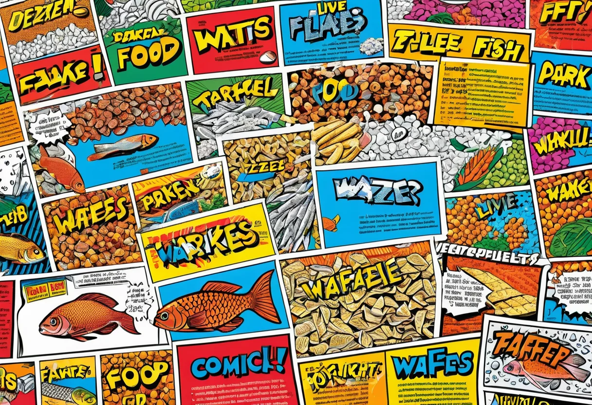
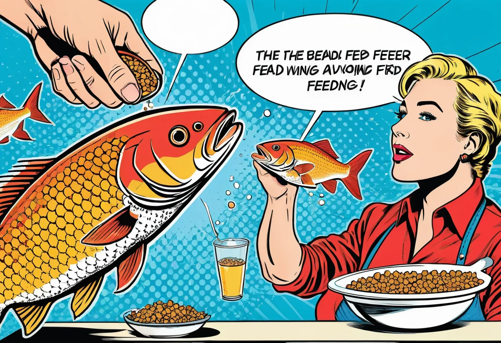

Aquarium Futter und Ernährung – Gesund füttern für vitale Fische
Die richtige Ernährung ist einer der wichtigsten Faktoren für die Gesundheit und Farbenpracht deiner Aquarienfische. Hochwertiges Futter liefert alle notwendigen Nährstoffe, Vitamine und Spurenelemente, die für ein starkes Immunsystem, leuchtende Farben und ein natürliches Verhalten unverzichtbar sind. Doch die Auswahl an Fischfutter ist riesig: Trocken-, Frost-, Lebend- und Gemüsefutter in unzähligen Varianten. In diesem Artikel erfährst du, welches Futter für welche Fischart geeignet ist, wie oft du füttern solltest und welche Fehler du unbedingt vermeiden solltest.
Die Nährstoffbedürfnisse von Aquarienfischen
Fische benötigen – wie alle Lebewesen – eine ausgewogene Mischung aus Proteinen, Fetten, Kohlenhydraten, Vitaminen und Mineralstoffen. Der genaue Nährstoffbedarf variiert je nach Art, Lebensweise und Größe:
- Protein (Eiweiß): Unverzichtbar für Wachstum, Zellreparatur und Immunsystem. Räuberische Fische (Cichliden, L-Welse) benötigen 40–50 % Protein, Allesfresser (Guppys, Platys) 30–40 %, Pflanzenfresser (Ancistrus, Otocinclus) 15–25 %.
- Fette: Wichtige Energiequelle und Träger fettlöslicher Vitamine. Zu viel Fett führt jedoch zu Verfettung der inneren Organe.
- Vitamine: Vitamin C (Immunsystem), Vitamin A (Haut und Flossen), Vitamin D (Calcium-Stoffwechsel), Vitamin E (Fortpflanzung). Mangel führt zu Wachstumsstörungen und erhöhter Krankheitsanfälligkeit.
- Mineralstoffe: Calcium, Magnesium, Phosphor und Spurenelemente für Knochenbau, Schuppenbildung und Enzymfunktionen.
- Ballaststoffe: Besonders wichtig für pflanzenfressende Welse und Garnelen. Sie fördern die Verdauung und verhindern Darmprobleme.


Die verschiedenen Futterarten im Überblick
Trockenfutter
Trockenfutter ist die bequemste und am weitesten verbreitete Futterform. Es gibt es in verschiedenen Varianten:
- Flockenfutter: Leicht verdaulich, schwimmt an der Oberfläche und sinkt langsam – ideal für Oberflächen- und Mittelschichtfische wie Guppys, Salmler und Skalare. Die Zusammensetzung variiert je nach Hersteller.
- Granulat: Sinkt schneller als Flocken und eignet sich für bodenorientierte Fische. Es gibt Granulat in verschiedenen Größen – von fein (für kleine Salmler) bis grob (für große Cichliden).
- Sticks und Chips: Größere, schwimmfähige Futterstücke für größere Fische wie Diskus, Skalare und große Buntbarsche.
- Tabletten (Wels-Tabletten): Schwere, sinkende Tabletten für Bodenbewohner wie Panzerwelse, Harnischwelse und Garnelen. Sie enthalten oft einen hohen Anteil pflanzlicher Bestandteile.
Achte bei der Auswahl von Trockenfutter auf die Inhaltsstoffe: Hochwertige Produkte nennen genaue Protein-, Fett- und Faseranteile und enthalten keine billigen Füllstoffe. Markenprodukte von Sera, Tetra, JBL, Dennerle oder Hobby haben sich in der Aquaristik bewährt. Lagere Trockenfutter trocken, kühl und dunkel – geöffnete Packungen sollten innerhalb von 3–6 Monaten aufgebraucht werden, da Vitamine mit der Zeit zerfallen.
Frostfutter
Frostfutter besteht aus tiefgefrorenen Naturprodukten wie Mückenlarven, Artemia, Daphnien, Cyclops oder Krill. Es ist eine hervorragende Ergänzung zum Trockenfutter, da es den natürlichen Futtertieren der Fische sehr nahe kommt. Frostfutter ist reich an Proteinen und wird von fast allen Fischen gerne angenommen. Die einzelnen Würfel oder Tuben werden direkt im Aquarium aufgetaut und verfüttert – niemals im Ganzen einfrieren!
Tipp: Frostfutter vor der Fütterung in einem Glas mit Aquarienwasser auftauen und kurz abspülen, um Schwebstoffe zu entfernen. Das schont die Wasserqualität und verhindert das Eintragen von Bakterien aus der Tauflüssigkeit.
Lebendfutter
Lebendfutter ist die natürlichste aller Futterformen und regt den Jagdtrieb der Fische an. Es ist besonders wertvoll für die Zucht und Aufzucht von Jungfischen. Beliebte Lebendfutterarten sind:
- Artemia-Nauplien: Winzige Salzkrebschen, ideal für die Aufzucht von Fischlarven und Jungfischen.
- Daphnien (Wasserflöhe): Reich an Ballaststoffen, fördern die Verdauung und werden von allen Fischen gejagt.
- Mückenlarven (rot/schwarz): Sehr proteinreich, aber nur aus sauberen Quellen verfüttern.
- Grindalwürmer und Mikrowürmer: Für die Aufzucht von Kleinfisch- und Garnelen-Nachwuchs.
- Tubifex: Sehr nahrhaft, aber nur aus kontrolliert sauberen Zuchten verwenden – Wildfänge können Krankheitserreger enthalten.
Pflanzliches Futter
Viele Aquarienfische benötigen pflanzliche Kost für eine gesunde Verdauung. Besonders Welse, Mollys, Schwertträger und Buntbarsche mit pflanzlicher Ernährungsbasis freuen sich über regelmäßige Grünkost. Geeignet sind:
- Überbrühte Gemüsestücke: Zucchini, Gurke, Paprika, Karottenscheiben, Brokkoli.
- Blattgemüse: Spinat (überbrüht), Löwenzahn, Brennnessel.
- Algenfutter und Spirulina-Tabletten für Algenfresser.
Gemüsestücke werden mit einer Klemmscheibe oder einem Gemüseclip am Beckenboden oder an der Scheibe befestigt. Nach 24 Stunden werden nicht gefressene Reste entfernt, damit sie nicht das Wasser belasten.
🛒 Empfohlene Produkte
Wie oft und wie viel füttern?
Eine der häufigsten Fragen in der Aquaristik ist die richtige Futtermenge und -häufigkeit. Die goldene Regel lautet: Weniger ist mehr! Futterreste belasten das Wasser und führen zu Nitratproblemen, Algenwachstum und Fäulnis. Die meisten Fische kommen mit 1–2 Mahlzeiten pro Tag aus:
- Erwachsene Fische: 1–2 Fütterungen pro Tag.
- Jungfische und Aufzucht: 3–5 kleine Mahlzeiten pro Tag für optimales Wachstum.
- Pflanzenfresser (Welse, Mollys): Täglich eine pflanzliche Hauptmahlzeit plus gelegentliche Grünkost.
- Spezialisierte Fresser (Räuber, Saugwelse): Je nach Art 1–2 Fütterungen, teilweise nur jeden zweiten Tag.
Die richtige Futtermenge pro Mahlzeit: So viel, wie die Fische in 2–3 Minuten vollständig fressen können. Beobachte die Fische während der Fütterung: Wenn nach 3 Minuten noch Futter übrig ist, war es zu viel. Ein Fastentag pro Woche (keine Fütterung) wird von vielen Aquarianern praktiziert, um den Stoffwechsel der Fische zu entlasten und die Wasserqualität zu verbessern.
Futter für spezielle Fischgruppen
Nicht jedes Futter ist für jede Fischart geeignet. Hier die Empfehlungen für die wichtigsten Gruppen:
Oberflächenfische (Guppys, Platys, Schwertträger, Zahnkarpfen)
Diese Fische fressen am liebsten an der Wasseroberfläche. Flockenfutter, feines Granulat und Frostfutter (Artemia, Daphnien) sind ideal. Achte auf einen ausgewogenen Proteingehalt von 30–40 %.
Mittelwasserfische (Salmler, Skalare, Regenbogenfische)
Feines bis mittleres Granulat, Flocken und Frostfutter. Skalare und größere Salmler nehmen auch größere Sticks und Lebendfutter. Der Proteingehalt sollte bei 35–45 % liegen.
Bodenbewohner (Panzerwelse, Harnischwelse, Schmerlen)
Schwere, sinkende Tabletten und Granulat sind ideal. Harnischwelse benötigen zusätzlich pflanzliche Kost und gelegentlich Holzfaser (Aufwuchs auf Wurzeln). Proteingehalt: 25–35 %, bei fleischfressenden Arten (manchen L-Welsen) bis 45 %.
Wirbellose (Garnelen, Krebse)
Spezielles Garnelenfutter in Form von Sticks, Granulat oder Blättern. Seemandelbaumblätter, Laub und Gemüsestücke sind eine wichtige Ergänzung. Proteingehalt: 25–35 %, mit ausreichend Calcium und Mineralstoffen für die Häutung.
Pflanzenfresser (Ancistrus, Otocinclus, Mollys)
Pflanzliche Tabletten, Spirulina-Futter, Algenblätter und regelmäßige Gemüsefütterung. Ballaststoffe und Rohfaser sind hier besonders wichtig.
Häufige Fütterungsfehler und ihre Folgen
- Überfütterung: Futterreste belasten das Wasser, erhöhen Nitrat und Phosphat, fördern Algenwachstum und führen zu Verfettung der Fische. Symptome: trübes Wasser, übermäßiger Algenbewuchs, verfettete Fische mit abgerundetem Bauch.
- Einseitige Ernährung: Ausschließlich Trockenfutter ohne Frost- oder Lebendfutter führt zu Vitaminmangel und geschwächtem Immunsystem. Symptome: blasse Farben, reduzierte Aktivität, erhöhte Krankheitsanfälligkeit.
- Falsche Futtergröße: Zu großes Futter wird verschluckt und wieder ausgespuckt oder verstopft den Darm. Wähle die Futtergröße entsprechend der Maulgröße deiner Fische.
- Unregelmäßige Fütterung: Feste Fütterungszeiten geben den Fischen Struktur und fördern die Akzeptanz. Wildes Füttern zu unterschiedlichen Zeiten stresst die Tiere.
- Futter nicht richtig lagern: Altes, oxidiertes oder feuchtes Futter verliert seinen Nährwert und kann schimmeln.
Fazit
Die richtige Ernährung deiner Aquarienfische ist eine der wichtigsten Säulen der Aquaristik. Hochwertiges, abwechslungsreiches Futter, angepasst an die Bedürfnisse der jeweiligen Art, sorgt für vitale Fische mit leuchtenden Farben und einem starken Immunsystem. Beachte die richtige Futtermenge (nicht überfüttern!), ergänze Trockenfutter mit Frost- und Lebendfutter und vergiss die pflanzliche Kost für Pflanzenfresser nicht. Mit einer ausgewogenen Ernährung und festen Fütterungsrhythmen wirst du lange Freude an deinen gesunden, aktiven Aquarienbewohnern haben.
Weitere Informationen zur Pflege deines Aquariums findest du in unserem Pflegeroutine-Guide.
🛒 Empfohlene Produkte
[ AdSense-Werbefläche ]